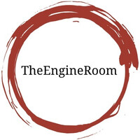
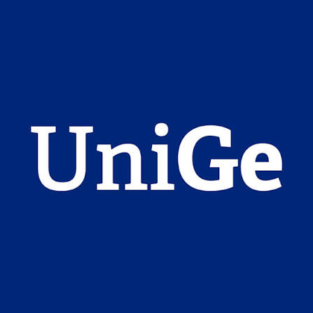
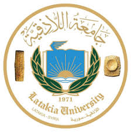
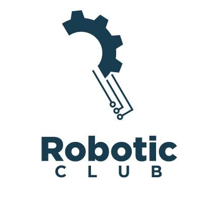
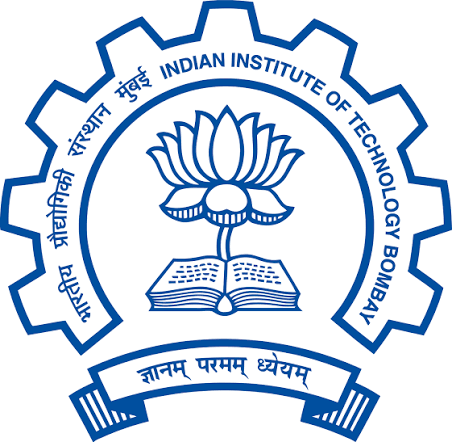

About Me
I'm a robotics engineer and PhD researcher in Robotics and Intelligent Machines at the University of Genoa in the TheEngineRoom lab at DIBRIS. I build autonomous navigation for mobile robots: I train deep reinforcement learning policies at scale in NVIDIA Isaac Lab, then deploy them on real robots through ROS 2 and Nav2.
My background combines mechatronics (BE, Tishreen University) and aerospace dynamics and control (M.Tech, IIT Bombay), with hands-on work on drones, multispectral cameras, CNC machines and ground robots. The thread running through it is that I care about what works on hardware. Simulation is only useful when the policy survives real latency, actuator dynamics and imperfect sensors.
Experience

'" />PhD Researcher
TheEngineRoom, DIBRIS, University of Genoa – Genoa, Italy
2026 – Present
Deep reinforcement learning for human-aware robot navigation: a local planner for UGVs trained at scale in Isaac Lab and deployed through ROS 2 / Nav2, with a focus on Sim2Real transfer in dynamic environments.

'" />Teaching Assistant, AI Planning (PDDL / PDDL+)
DIBRIS, University of Genoa – Genoa, Italy
Feb 2026 – Jul 2026
Weekly tutorials on classical and temporal planning for a graduate course: PDDL 2.1 (durative actions, numeric fluents, continuous effects) and PDDL+ for hybrid systems. Supervised student projects on autonomous PDDL+ planning agents.

'" />Teaching Assistant, Mechatronics Lab
Tishreen University – Latakia, Syria
Sep 2021 – Dec 2021
Taught the practical part of Mechatronics Applications 1: mobile robots, IoT with Blynk, PIC microcontrollers, Bluetooth, and SolidWorks design.

'" />Robotics Intern
Robotics Club, Tishreen University – Latakia, Syria
Jan 2020 – Apr 2020
Robot-control programs in Python under ROS, Gazebo simulation with obstacles, and mechanical robot design.
Selected Projects
DRL Local Planner for UGV Navigation (Sim2Real)
A PPO policy trained in Isaac Lab and deployed as a Nav2 controller plugin on a Clearpath Husky A200. The simulator mirrors the real robot's actuation chain (transport delay, slew limits, servo lag, wheel saturation) and LiDAR imperfections, with domain randomization, so the policy transfers without retuning.
DRIFT: Multispectral Terrain Identification
A dual-stream ResNet-50 that fuses NIR / Red Edge band ratios through a differential branch to detect oil contamination on soil from MicaSense RedEdge-P imagery.
Nav2 Stack & Graph-Based Navigation for the MiR 250
A ROS 2 Humble stack for a real MiR 250 AMR, covering the driver and REST API integration, SLAM Toolbox mapping, AMCL, Nav2 and Gazebo demos. It also includes an interactive graph editor and a graph-based navigation controller.
Motion Planning with ROS
Bug-1 on a TurtleBot3, roadmap planning via trapezoidal cell decomposition with shortest-path search, and balanced consensus and synchronization across four TurtleBots using a unicycle model.
Hand-Drawn Circuit Recognition to CNC-Drawn PCB
BE thesis: designed a CNC machine in SolidWorks, built it in aluminium, and wrote an image-processing pipeline that recognizes hand-drawn circuits and converts them into PCB layouts.
Publications
Differential Analysis of Multispectral Images for Terrain Identification IEEE
O. Kashmar, H. Arya, F. Mastrogiovanni
2026 IEEE/ASME International Conference on Advanced Intelligent Mechatronics (AIM), Genoa, Italy
Human-Aware Robot Navigation: A Comprehensive Review of 161 Studies Under review
O. Kashmar, F. Mastrogiovanni
Submitted to Robotics and Autonomous Systems · Preprint on SSRN
Education
PhD in Robotics and Intelligent Machines (DRIM, Industry 4.0)
DIBRIS, University of Genoa – Genoa, Italy
2026 – Present
Thesis: Human-Aware Robot Navigation. Supervisor: Prof. Fulvio Mastrogiovanni. Coursework: ROS 2, From Labs to Enterprise, DRIMS2 Summer School on Robotics.

'" />M.Tech in Aerospace Engineering (Dynamics and Control)
Indian Institute of Technology Bombay – Mumbai, India
Dec 2021 – Feb 2024 · GPA 8.35/10
Thesis: Oil Leakage Detection Using Machine Learning and Drones. Collected drone data with MicaSense multispectral and IR cameras, and compared SVM, KNN, RF, DT and CNN models. ResNet-50 reached 96.5% accuracy.
Bachelor of Engineering in Mechatronics Engineering
Tishreen University – Latakia, Syria
Sep 2015 – Sep 2020 · CGPA 89.09/100 (3.7/4.0) · Ranked 2nd of 222
Thesis: Recognizing Hand-Drawn Circuits Using Image Processing and Drawing Them with a CNC Machine.
Honors & Awards
ICCR Scholarship, Government of India
Dec 2021 – Dec 2023 · Fully funded scholarship for the M.Tech at IIT Bombay.
Academic Award: 2nd of 222
Dec 2020 · Mechatronics Engineering, Tishreen University (2015 batch).
Academic Award: 1st in Department
Sep 2016 – Sep 2018 · First rank in Mechatronics Engineering in the 2nd, 3rd and 4th years.
2020 Kickoff Online Programming Contest
Aug 2020 · Top 20% of more than 2,000 contestants from Arab and African countries.
Leadership & Mentoring
Team leader, RC Plane Competition, IIT Bombay (2022) · Control & Robotics mentor to 6 students, IIT Bombay (2022) · Technical support and robotics instructor, Skills & Career Center, Tishreen University (2020–21).
Let's Work Together
Have a robot that needs to navigate, a policy that won't transfer from simulation, or a vision problem to solve? Email me a short description: your robot or platform, your simulator or stack, and your timeline. I'll reply with how I'd approach it.